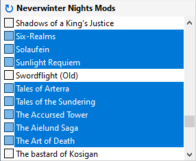
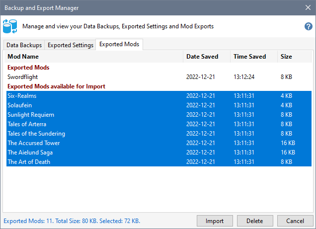
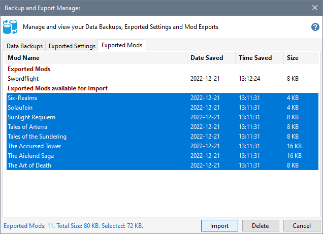

Export Mods
Export Mods that you want to use in another Profile or on a networked PC.
- Select the Mods that you want to export.

- Click Export Mods from the File menu or the right-click menu.
Import Mods
- Click Backup and Export Manager from the Tools menu and select the Exported Mods tab. You can also select Import Mods from the File menu.

- By default, the Installer Tool selects all Mods available for import. Use Ctrl+Click to deselect any Mods that you do not wish to import or click a Mod to only import one Mod. Press the Import button when you are satisfied with your Mod selections.

- The Mods will copied from the source to the target Profile. Mod property information, such as the Rating, Best Weapon, Notes, etc, are also copied.
If the source Mod and Group does not exist in the target Profile, a new Group is created and assigned to the imported Mod.
If the source Mod exists, but the source Group does not exist in the target Profile, the target Mod's Group is used.
Related Topics
Backup and Restore the Installer Tool's data
Export and Import Settings
Export and Import Mods
Import Map Settings